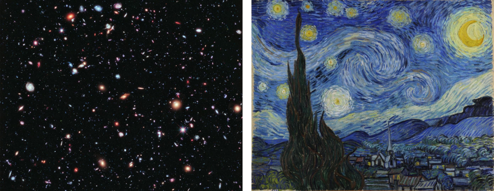

Sessão 18: Representação Literária e “Realidade”Session 18: Literary Representation and “Reality”
Principais LiçõesKey Takeaways
- Quando lemos a narrativa bíblica, estamos lendo uma interpretação dos eventos bíblicos dentro da poética estilizada (ou seja, convenções) da narrativa bíblica.When we read biblical narrative, we are reading an interpretation of the biblical events within the stylized poetics (i.e., conventions) of biblical narrative.
- A narrativa bíblica nos convida para o mundo narrativo dos autores, e também nos convida a ver o mundo a partir de sua perspectiva. As narrativas operam em você, e com o tempo, começam a afetar a maneira como vemos a nós mesmos e o mundo em que vivemos.Biblical narrative invites us into the narrative world of the authors, and it also invites us to view the world from the their perspective. The narratives work on you, and over time, they begin to affect the way we view ourselves and the world we’re living in.
A Poética da Narrativa BíblicaThe Poetics of Biblical Narrative
Ao ler a Bíblia Hebraica, é útil familiarizar-nos com os elementos básicos da cultura do antigo Oriente Próximo para obter insight sobre a cultura dos antigos israelitas.When reading the Hebrew Bible, it is helpful to familiarize ourselves with the basic elements of ancient Near Eastern culture to gain insight into the culture of the ancient Israelites.
No entanto, a chave principal para entender o texto é o próprio texto. Por exemplo, para entender uma narrativa em Gênesis, precisamos entendê-la à luz de todo o rolo de Gênesis e do TaNaK como um todo.However, the main key to understanding the text is the text itself. For example, to understand one narrative in Genesis, we need to understand it in light of the entire Genesis scroll and the TaNaK as a whole.
A narrativa bíblica é um tipo de literatura altamente estilizada que (1) relata a história de Israel enquanto (2) ao mesmo tempo oferece uma interpretação profética dessa história.Biblical narrative is a highly stylized kind of literature that (1) recounts Israel’s history while (2) at the same time offering a prophetic interpretation of that history.
Discernir a veracidade histórica da história bíblica é um importante tópico de pesquisa e debate, mas não deve ser confundido com a interpretação dessas narrativas cuidadosamente elaboradas. Em outras palavras, a apologética não deve ser confundida com a interpretação.Discerning the historical truthfulness of the biblical story is an important topic of research and debate, but it should not be confused with interpretation of these carefully crafted narratives. In other words, apologetics should not be confused with interpretation.
A narrativa bíblica não nos oferece imagens de câmera de segurança da história israelita antiga. Em vez disso, os autores empregaram as ferramentas historiográficas de “seletividade” e “arranjo temático” para construir narrativas com convenções estilizadas de enredo, caracterização, cenário e padrões de design.Biblical narrative does not offer us security-camera footage of ancient Israelite history. Rather, the authors have employed the historiographical tools of “selectivity” and “thematic arrangement” to construct narratives with stylized conventions of plot, characterization, setting, and design patterns.
Seu objetivo retórico é ajudar o leitor a ver o significado e a importância da história que estão contando.Their rhetorical goal is to help the reader see the meaning and significance of the story they are telling.
Para ilustrar este ponto, considere estas duas imagens de estrelas no céu. Qual imagem apresenta o céu noturno como ele realmente é?To illustrate this point, consider these two images of stars in the sky. Which image presents the night sky as it actually is?
Nenhuma das duas, é claro! Ambas as imagens são representações do universo estrelado retratado através de diferentes mídias, para diferentes propósitos e com diferentes efeitos sobre o espectador. Nenhuma delas é o próprio universo estrelado. A foto do Hubble representa um realismo máximo, enquanto A Noite Estrelada emprega um estilo impressionista. Mas ambas são imagens, ou pixels coloridos em uma superfície bidimensional de papel digital. Isso está longe do verdadeiro céu noturno!Neither one, of course! Both images are representations of the starry universe portrayed through different media, for different purposes, and with different effects on the viewer. Neither one is the starry universe itself. The Hubble photo represents a maximal realism, while The Starry Night employs an impressionistic style. But both are images, or colored pixels on a two-dimensional surface of digital paper. That is a far cry from the actual night sky!
A Noite Estrelada transmite a impressão e o sentimento do céu noturno conforme é relevante para uma pequena comunidade humana. Ela comunica muito através de mínimo detalhe, e usa justaposição e contraste (céus redemoinhados versus construções humanas geométricas) assim como similaridade (tons azuis no céu e na terra).The Starry Night conveys the impression and feeling of the night sky as it is relevant to a small human community. It communicates much through minimal detail, and uses juxtaposition and contrast (swirling skies versus geometric human buildings) as well as similarity (blue tones in the sky and on land).
“Uma fotografia de uma árvore é um bom exemplo da distinção entre um texto e o evento nele retratado. Uma fotografia é uma representação de uma árvore, mas não tem casca nem folhas, nem o céu atrás da árvore é um céu real. Dizer que uma fotografia apenas representa a árvore mas não é atualmente a árvore não significa que a árvore nunca existiu ou que a fotografia é imprecisa porque só mostra um lado da árvore. O mesmo pode ser dito dos textos narrativos bíblicos. Dizer que eles re-apresentam eventos mas não são os próprios eventos é simplesmente reconhecer um fato muito óbvio sobre as narrativas bíblicas: Elas são textos, o que significa que não estamos diante de eventos, mas de representações de eventos através de palavras.” “A photograph of a tree is a good example of the distinction between a text and the event depicted in it. A photograph is a representation of a tree, yet it does not have bark and leaves, nor is the sky behind the tree a real sky. To say that a photograph only represents the tree but is not actually the tree does not mean the tree never existed or that the photograph is inaccurate because it only shows one side of the tree. The same can be said of the biblical narrative texts. To say they re-present events but are not the events themselves is simply to recognize a very obvious fact about biblical narratives: They are texts, which means we stand not before events, but representations of events through words.”
Texto Versus Evento e o Significado da Narrativa BíblicaText Versus Event and the Meaning of Biblical Narrative
Um texto fornece uma representação literária de um objeto que ajuda o leitor a captar seu significado e importância a partir de uma perspectiva particular.A text provides a literary representation of an object that helps the reader grasp its meaning and significance from a particular perspective.
“A Traição das Imagens” de René Magritte fornece um exemplo clássico da diferença entre um objeto e sua representação.“The Treachery of Images” by Rene Magritte provides a classic example of the difference between an object and its representation.
“Ah, o famoso cachimbo. Como as pessoas me repreenderam por isso! E ainda assim, poderiam encher o meu cachimbo? Não, é apenas uma representação, não é? Então, se eu tivesse escrito na minha imagem ‘Isto é um cachimbo’, eu teria mentido!” “Ah, the famous pipe. How people reproached me for it! And yet, could you stuff my pipe? No, it’s just a representation, is it not? So if I had written on my picture ‘This is a pipe’, I’d have been lying!”
Na Bíblia, o mundo real é mediado ao leitor não apenas através do texto narrativo, mas também via o mundo narrativo que enquadra o texto do autor.In the Bible, the real world is mediated to the reader not only through the narrative text but also via the narrative world that frames the author’s text.
Os autores bíblicos “pegam a matéria-prima da linguagem e a moldam em uma versão do mundo da realidade empírica. São essencialmente estruturas linguísticas que são adaptadas para conformar-se aos eventos da vida real ... O leitor olha para os eventos na narrativa da mesma maneira como ele ou ela olharia para eventos na vida real, o que facilita esquecer que se está olhando para palavras e não para o próprio evento ... Embora haja outros caminhos através dos quais informação possa ser obtida sobre os eventos do mundo real além do texto, eles não são, de fato, parte do texto e não são controlados pelo autor do texto. Seja o que for que se diga sobre o mundo por trás da narrativa, ele não deve ser identificado com o mundo narrativo retratado no próprio texto. O mundo textual é uma versão dos eventos que ele retrata. Não deve ser tomado como seu substituto.”The biblical authors “take the raw material of language and shape it into a version of the world of empirical reality. It’s essentially linguistic structures that are adapted to conform to events in real life ... The reader looks at the events in the narrative in much the same way as he or she would look at events in real life, which makes it easy to forget that one is looking at words not the event itself ... While there are other avenues through which information can be gained about the real world events beyond the text, they are not, in fact, part of the text and not controlled by the author of the text. Whatever may be said about the world behind the narrative, it should not be identified with the narrative world depicted in the text itself. The textual world is a version of the events it depicts. It should not be taken as their replacement.”
“A Bíblia Hebraica é uma representação literária da história de Israel que afirma ser uma interpretação divinamente inspirada e profética da história de Israel. Não é uma história de Israel, mas uma interpretação teológica da história de Israel no contexto de uma história cósmica da criação (Gn. 1-11). A narrativa afirma t...” “The Hebrew Bible is a literary representation of Israel’s history that claims to be a divinely inspired, prophetic interpretation of Israel’s history. It is not a history of Israel but a theological interpretation of Israel’s story in the context of a cosmic history of creation (Gen. 1-11). The narrative claims t...”
O Que Isso Significa para a Bíblia Hebraica?What Does This Mean for the Hebrew Bible?
A Bíblia Hebraica é uma representação literária da história de Israel que afirma ser uma interpretação profética divinamente inspirada da história de Israel. Não é uma história de Israel, mas uma interpretação teológica da história de Israel no contexto de uma história cósmica da criação (Gn. 1-11). A narrativa afirma tanto representar a história quanto mostrar seu significado e importância, com o objetivo de eliciar uma resposta do leitor.The Hebrew Bible is a literary representation of Israel’s history that claims to be a divinely inspired, prophetic interpretation of Israel’s history. It is not a history of Israel but a theological interpretation of Israel’s story in the context of a cosmic history of creation (Gen. 1-11). The narrative claims to both represent history and to show its meaning and significance, with the aim of eliciting a response from the reader.
Ao ler a Bíblia Hebraica, precisamos nos familiarizar com os elementos básicos da cultura do antigo Oriente Próximo, mas o foco principal de nossos esforços para entender o texto deve ser o próprio texto. Em outras palavras, todo o TaNaK é o primeiro e mais primário contexto para o significado do texto bíblico.When reading the Hebrew Bible, we need to become familiar with the basic elements of ancient Near Eastern culture, but the primary focus of our efforts to understand the text should be the text itself. In other words, the entire TaNaK is the first and most primary context for the meaning of the biblical text.
Recursos Recomendados. Aqui está uma bibliografia iniciante sobre narrativa bíblica.Recommended Resources. Here is a starter’s bibliography on biblical narrative.
- J.P. Fokkelman, Lendo a Narrativa Bíblica: Um Guia Introdutório.J.P. Fokkelman, Reading Biblical Narrative: An Introductory Guide.
- Robert Alter, A Arte da Narrativa Bíblica.Robert Alter, The Art of Biblical Narrative.
- Adele Berlin, Interpretação da Narrativa Bíblica.Adele Berlin, Interpretation of Biblical Narrative.
- Shimon Bar-Efrat, Arte Narrativa na Bíblia.Shimon Bar-Efrat, Narrative Art in the Bible.
Pergunta para ReflexãoReflection Question


Você já pensou no texto bíblico como uma representação da realidade em vez de como a própria realidade? O que isso significa para o que encontraremos no texto? Se é uma representação, ela ainda pode ser veraz?Have you ever thought of the biblical text as a representation of reality rather than as the reality itself? What does this mean for what we will encounter in the text? If it is a representation, can it still be truthful?
The Mediation of Meaning Through Narrative. Diagram created by Tim Mackie for BibleProject Classroom: Introduction